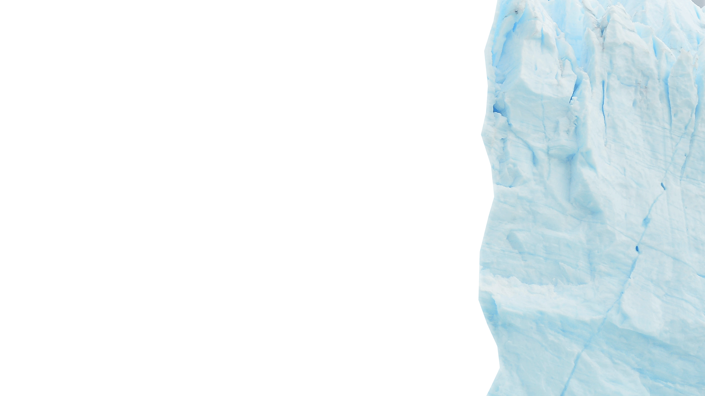
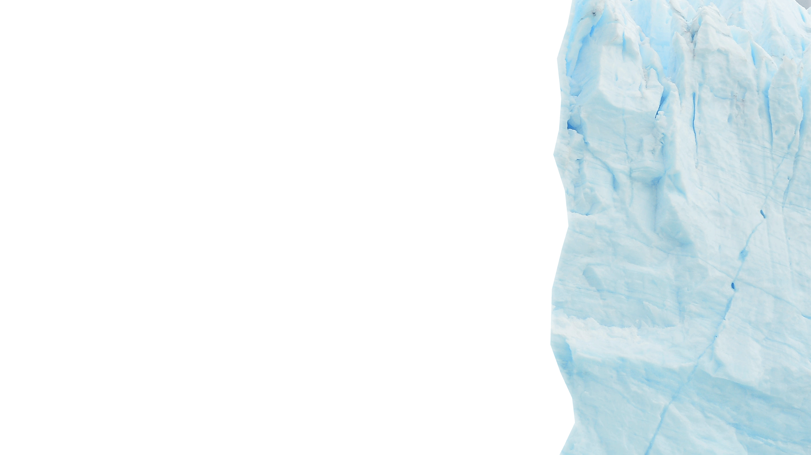
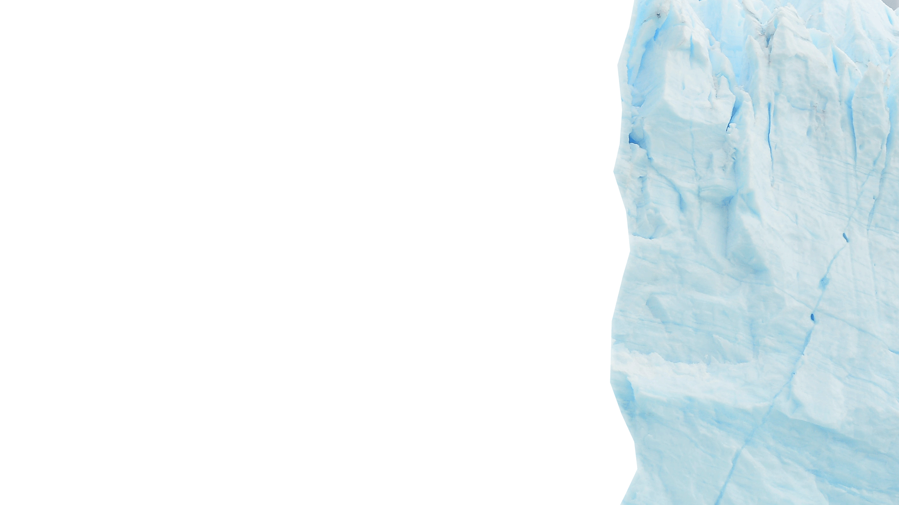
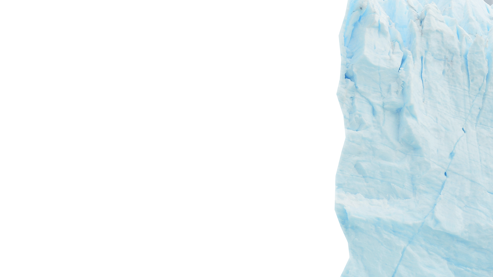

Jaya Wijaya


 



Gunung Jaya Wijaya terletak di Papua, Indonesia, di tengah Pegunungan Sudirman.
Gunung Jaya Wijaya memiliki ketinggian 4.884 meter (16.024 kaki), menjadikannya puncak tertinggi di Oseania.
Puncak ini adalah gunung tertinggi di Indonesia dan juga di antara puncak tertinggi di dunia.
Gunung ini dikenal dengan berbagai nama, termasuk Puncak Carstensz, yang dinamai menurut penjelajah Belanda Jan Carstenszoon, yang melihat puncak bersalju di dekat khatulistiwa pada tahun 1623.
Pendakian pertama ke puncak dilakukan oleh Tim Pendakian Carstensz pada tahun 1962, dipimpin oleh Heinrich Harrer dari Austria.
Rute pendakian umumnya dimulai dari wilayah Timika, dan melibatkan perjalanan melewati hutan hujan tropis dan medan yang sulit.
Pendakian ke puncak ini dianggap sulit karena medan yang berat, kondisi cuaca yang berubah-ubah, dan tantangan logistik dalam mencapai lokasi tersebut.
Gunung ini memiliki ekosistem yang unik, termasuk gletser tropis yang langka dan keanekaragaman hayati yang tinggi, termasuk spesies tanaman dan hewan endemik.
Puncak Jaya terkenal dengan gletser tropisnya yang semakin menurun akibat perubahan iklim. Gletser ini terletak di daerah sekitar puncak.
Gunung ini memiliki arti penting bagi masyarakat adat lokal Papua dan sering dianggap sebagai tempat suci.